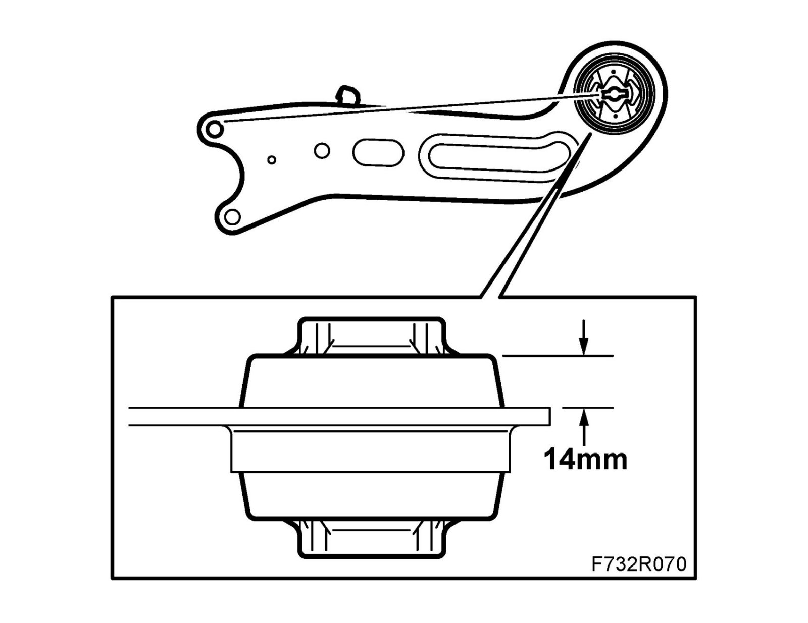

Trailing Arm Bushing: Service and Repair
Bush, longitudinal linkTo remove
1. Remove the longitudinal link.
2. Clamp the longitudinal link in a vice.
3. Use 83 90 122 Drift and 87 91 188 Support, for removing pinion shaft and press out the bush.
To fit
1. Position the bush. An imaginary line from the recesses in the center of the bush should be aligned with the upper edge of the upper hole in the longitudinal link.

2. Use 83 90 122 Drift and 87 91 188 Support, for removing pinion shaft to press in the bush. The bush should protrude 14 mm above the flat side of the link arm.
3. Fit the longitudinal link.